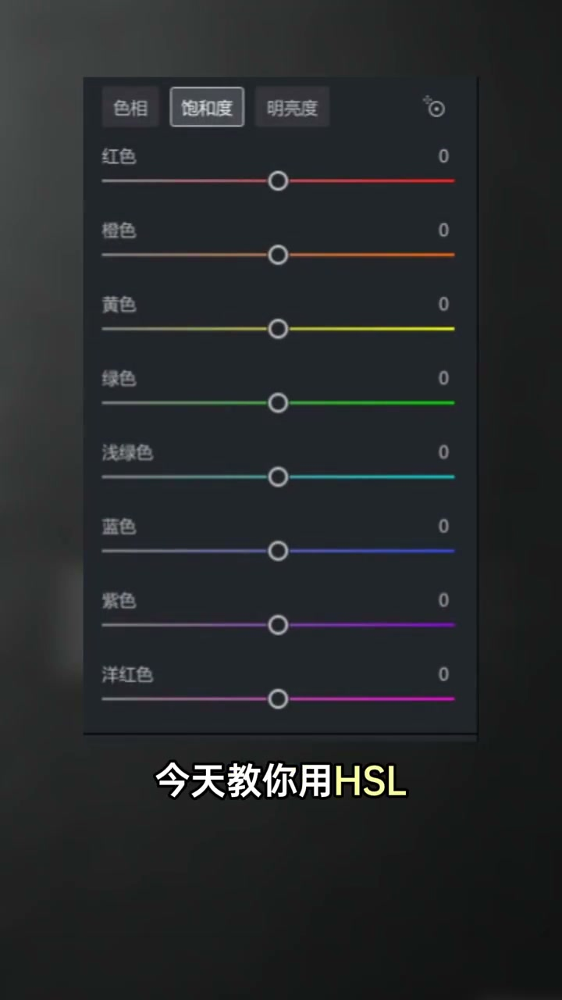
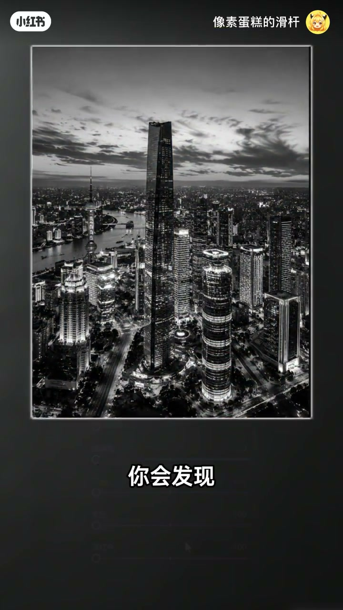
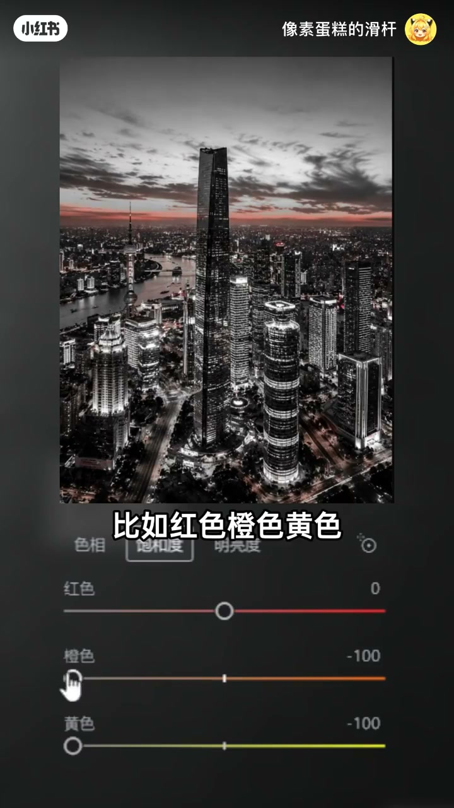
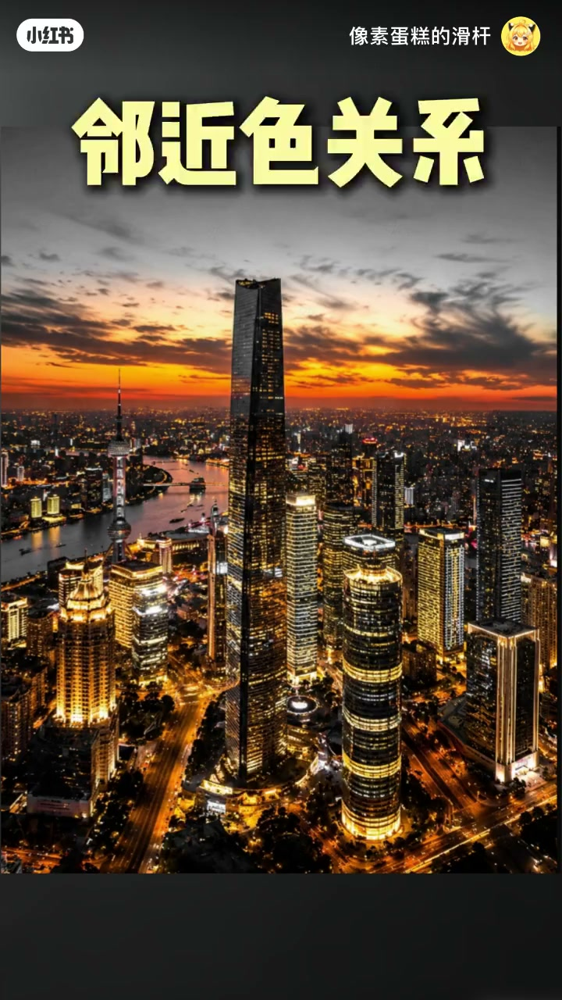
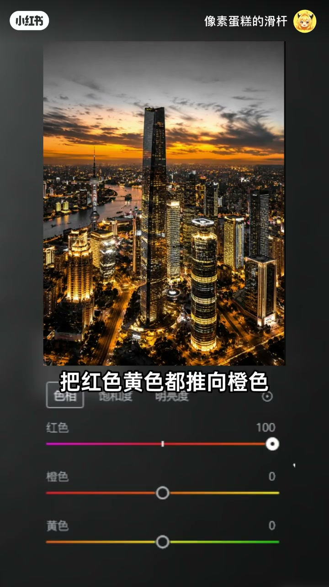
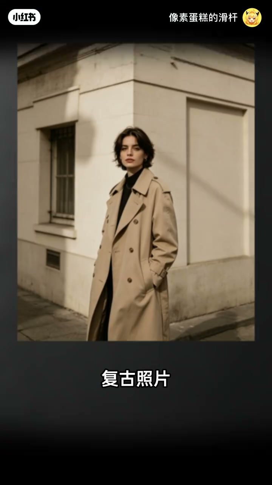
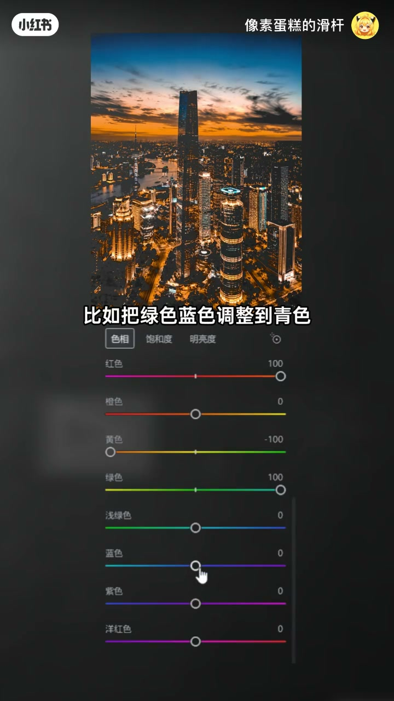
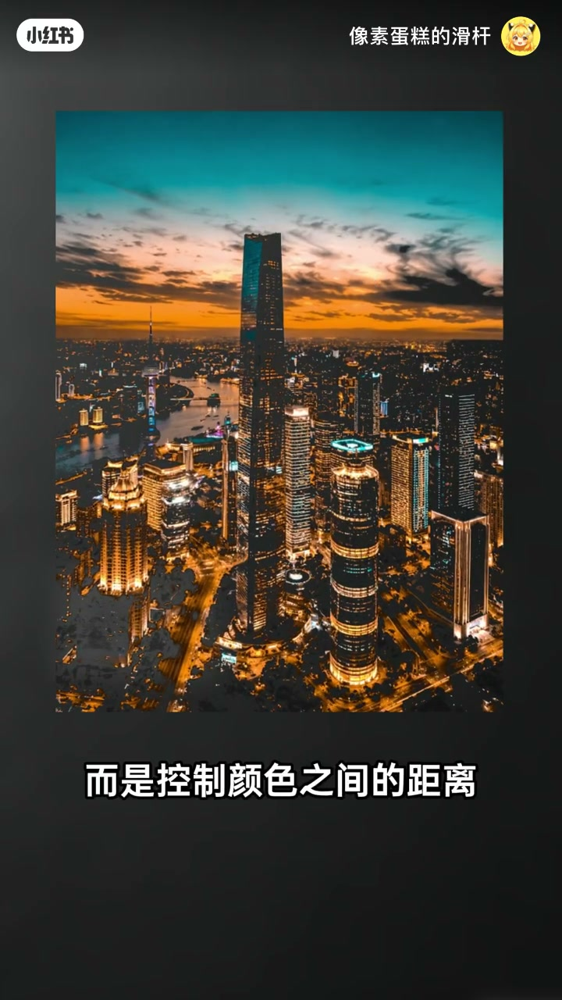

内容要点
像素蛋糕的滑杆用 HSL 把同一张照片调出三种风格：先藏色做干净底，再只留暖色做邻近色关系；把多色往同一方向靠成单色调；或保留冷暖距离做撞色。结论：高级感不是颜色越多越好，而是控制颜色之间的距离——靠近更舒服、统一更强烈、拉开更冲击。
知识结构
高级感≠颜色越多；先把颜色全部隐藏，画面变干净。
只保留红橙黄等暖色，形成邻近色关系，温暖柔和有故事感。
不同颜色往同一方向靠（如红黄推橙），画面被一种颜色包裹。
保留冷暖距离，绿蓝推向青，与暖色对比，视觉更鲜明。
高级调色＝控制颜色距离：靠近舒服、统一强烈、拉开冲击。
用 HSL 管「颜色距离」：藏杂色后，邻近色求协调、单色调求统一、撞色求冲击。高级感来自控制距离，而不是堆颜色。
00:00-00:28先藏色，再只留暖色做邻近色
开场提问：很多高级感照片其实不是颜色越多越好。今天用 HSL 把一张照片做出三种完全不同的色彩风格。先把照片里的颜色全部隐藏，复杂画面会变得非常干净。
然后只保留暖色区域，比如红、橙、黄——此时不会产生强烈冲突，反而有舒服的协调感。这就是摄影常用的邻近色关系，适合表现温暖、柔和与故事感。




00:28-00:57单色调包裹 vs 撞色拉开
若仍觉得颜色太杂，可以把不同颜色往同一个方向靠，例如把红色、黄色都推向橙色，最后整个画面像被一种颜色包裹——这叫单色调；电影海报、复古照片常用它制造统一氛围。
若想更有视觉冲击，就不要让颜色靠近：保留冷暖之间的距离，比如把绿色、蓝色调整到青色，让它和原来的暖色形成对比，照片会更鲜明，也就是撞色关系。



00:57-01:07收束：高级调色＝控制颜色距离
作者收束：高级调色其实不是增加颜色，而是控制颜色之间的距离。颜色靠近，画面更舒服；颜色统一，风格更强烈；颜色拉开，视觉更冲击。

完整转录（31段）
以下文本由 Whisper medium 模型自动转录，可能存在少量识别误差，已尽可能修正。
你有没有发现很多高级感照片其实不是颜色越多越好
今天教你用HSL把一张照片做出三种完全不同的色彩风格
先把照片里的颜色全部隐藏
你会发现原本复杂的画面变得非常干净
然后只保留暖色区域
比如红色橙色黄色
这时候照片不会产生强烈冲突
反而有一种舒服的协调感
这就是摄影里常用的临近色关系
适合表现温暖柔和故事感
如果觉得颜色还是太杂
可以把不同颜色往同一个方向靠
比如把红色黄色都推向橙色
最后整个画面像被一种颜色包裹
这种方法叫单色调
很多电影海报复古照片都会利用这种方式制造统一氛围
但如果想让照片更有视觉冲击
就不要让颜色靠近
保留冷暖之间的距离
比如把绿色蓝色调整到青色
让它和原来的暖色形成对比
这时候照片会更加鲜明
也就是撞色关系
高级调色其实不是增加颜色
而是控制颜色之间的距离
颜色靠近
画面更舒服
颜色统一
风格更强烈
颜色拉开
视觉更冲击